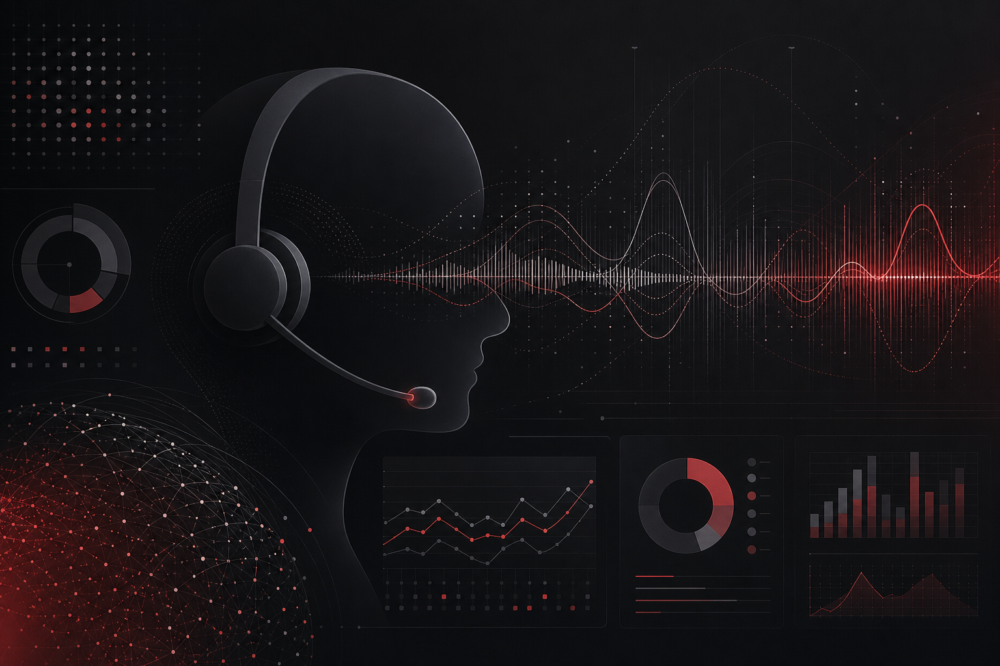

2009 — The foundation
Nintendo of America
Customer analyst · operations & technology
I joined the video games industry as a customer analyst, onboarding new technology to make support operations smarter — including a speech analytics program to analyze and optimize call-center performance and IVR routing.
- Helped lead the integration of Oracle with Slalom consulting
- Built the operational mindset I still use: measure, route, improve, repeat